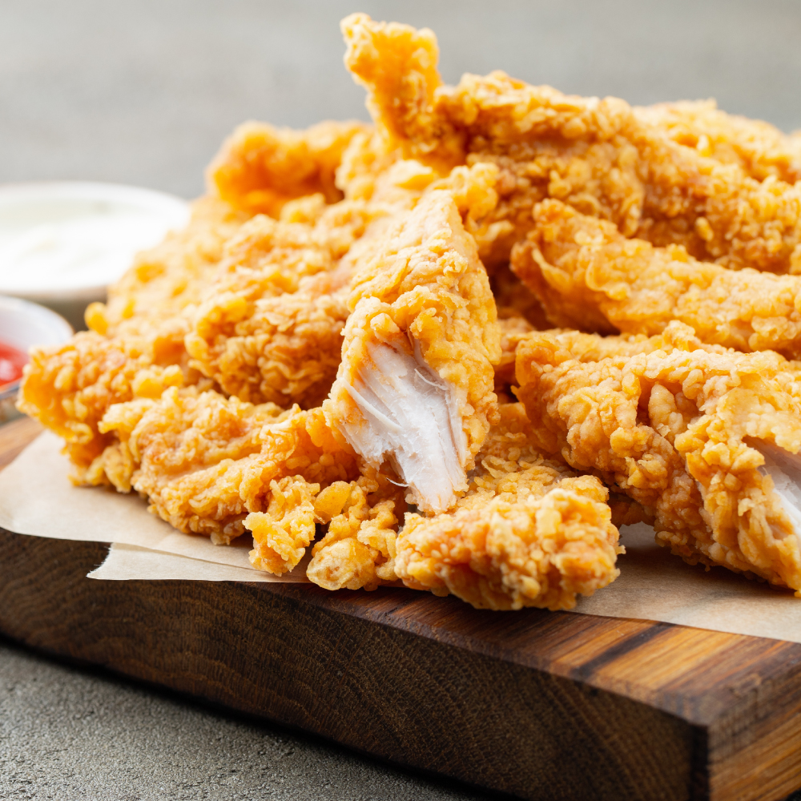

Crispy Chicken

Description
Super Crispy Fried Chicken made with buttermilk, chicken, hot sauce,
and seasoned flour is crispy on the outside and tender on the inside!
Ingredients
- 1.81 kg chicken
- 480 g buttermilk
- 1 tablespoon kosher salt
- 2 teaspoons coarse ground black pepper
- 2 tablespoons hot sauce , optional
- 250 g flour
- 1 teaspoon paprika
- oil , for frying
Instructions
- Mix the chicken pieces, buttermilk, salt, pepper and hot sauce in a large bowl and refrigerate for at least
four hours.
- Mix the paprika with the flour in a medium bowl with a baking sheet set up next to it.
- Remove the chicken from the buttermilk, then add each chicken piece to the flour, coating well, then place
onto the baking sheet and let sit for at least 30 minutes (the flour will become paste-like).
- Add a large dutch oven ½ full with canola oil heated to 365 degrees and fry in batches (do not crowd the
pan) of 4 pieces, cooking for 10-12 minutes (check for 165 degrees and that the chicken is cooked through).